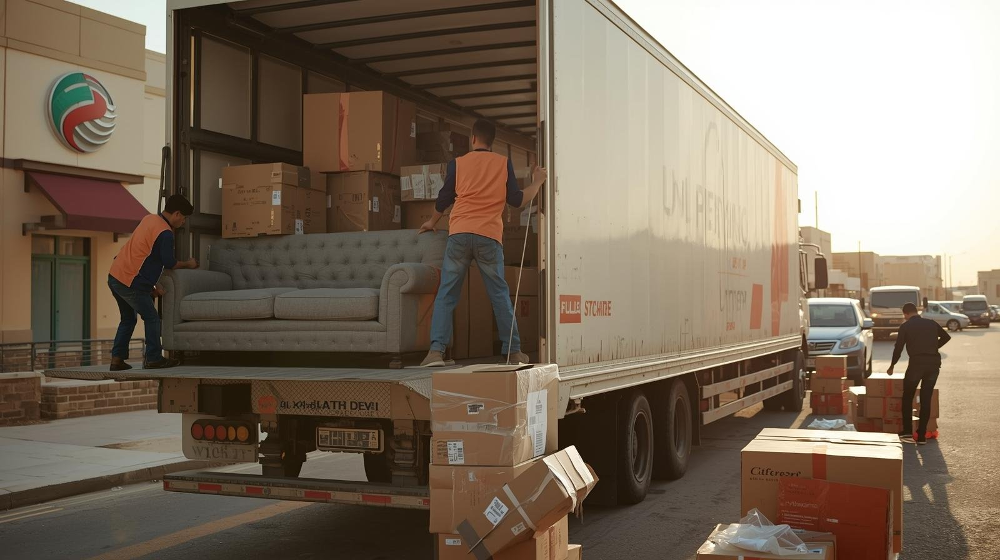

شركة نقل عفش بالمجمعة

إذا كنت تبحث عن شركة نقل عفش بالمجمعة توفر لك خدمة احترافية وسريعة، فقد وصلت إلى المكان المناسب، تقدم شركة نقل الرياض حلولاً متكاملة لنقل الأثاث داخل مدينة المجمعة وخارجها، مع التركيز على حماية أغراضك وتأمينها أثناء النقل، فريق متخصص ومدرب على أعلى مستوى يضمن لك تجربة نقل آمنة ومرتبة دون أي عناء، وبأسعار تنافسية تناسب الجميع، لا تضيع وقتك في البحث عن شركات متعددة، تواصل مع شركة نقل الرياض الآن واحصل على استشارة مجانية وحجز سريع لخدمة نقل العفش بالمجمعة بكل سهولة وأمان.
أفضل شركة نقل عفش بالمجمعة بخدمة احترافية
عندما تبحث عن أفضل شركة نقل عفش بالمجمعة بخدمة احترافية، تأتي شركة نقل الرياض في الصدارة، تتميز الشركة بخبرة طويلة في نقل الأثاث والممتلكات المنزلية والمكتبية، مع الالتزام بأعلى معايير الأمان والحماية، تستخدم الشركة أحدث أدوات التغليف ووسائل النقل الحديثة لضمان وصول أثاثك بحالة ممتازة، ويشرف على العملية فريق من العمالة المدربة على التعامل مع كل نوع من الأثاث بعناية فائقة، لا تتردد في اختيار شركة نقل الرياض للحصول على تجربة نقل سلسة، سريعة، وموثوقة في المجمعة.
خدمات شركة نقل عفش بالمجمعة مع الفك والتركيب والتغليف
تقدم شركة نقل الرياض أفضل شركة نقل عفش بالمجمعة خدمات عديدة لتلبية احتياجات ومتطلبات العملاء، إليك أهم الخدمات التي تقدمها الشركة:
- نقل الأثاث المنزلي والمكتبي: نقل سريع وآمن لجميع أنواع الأثاث داخل مدينة المجمعة وخارجها.
- خدمة الفك والتركيب: فريق متخصص يقوم بفك الأثاث بعناية وتركيبه في المكان الجديد دون أي تلف.
- التغليف الاحترافي: استخدام مواد عالية الجودة لتغليف الأثاث وحمايته من الصدمات والخدوش أثناء النقل.
- النقل بواسطة سيارات مجهزة: سيارات نقل حديثة ومناسبة لجميع أحجام الأثاث لضمان وصوله بأمان.
- توفير عمالة مدربة: عمالة محترفة ومدربة على التعامل مع كل نوع من الأثاث والمقتنيات الثمينة.
- خدمة سريعة ومرنة: الالتزام بالمواعيد وتقديم خدمات تناسب جدول العميل واحتياجاته.
- أسعار تنافسية: الحصول على أفضل جودة بأقل تكلفة ممكنة دون المساس بالمستوى الاحترافي للخدمة.
مميزات الاعتماد على شركة نقل عفش موثوقة في المجمعة
الاعتماد على شركة نقل عفش بالمجمعة يوفر لك العديد من المميزات التي تجعل تجربة النقل سهلة وآمنة، أولاً، تضمن لك الحماية التامة لممتلكاتك بفضل التغليف الاحترافي والفك والتركيب الآمن للأثاث، ثانيًا، توفر الشركة فريق عمل مدرب على أعلى مستوى للتعامل مع كل نوع من الأثاث والمقتنيات الثمينة، ما يقلل من فرص التلف أو الخدوش. ثالثًا، يتيح لك الاعتماد على شركة موثوقة توفير الوقت والجهد، حيث يتم التخطيط للنقل بشكل منظم ومسبق، بالإضافة إلى ذلك، تقدم الشركة خدمات بأسعار عادلة ومنافسة مع التزام بالمواعيد والجودة، مما يمنحك راحة البال ويجعل تجربة نقل الأثاث بالمجمعة سلسة ومريحة.
أسعار شركة نقل عفش بالمجمعة لعام 2026
تحرص شركة نقل الرياض على تقديم خدمات نقل عفش بالمجمعة بأسعار تنافسية وعادلة تلبي احتياجات جميع العملاء لعام 2026، تعتمد الشركة على توفير قيمة مميزة مقابل جودة الخدمة، حيث يجمع سعر الخدمة بين الكفاءة العالية لفريق العمل، استخدام أدوات النقل والتغليف الحديثة، وسرعة الإنجاز، كما توفر الشركة مرونة في اختيار الخدمات المطلوبة، سواء كانت خدمة النقل فقط أو شاملة مع الفك والتركيب والتغليف، بما يضمن تلبية جميع متطلبات العملاء بأسلوب احترافي وموثوق.
كيف تختار أفضل شركة نقل عفش بالمجمعة؟
عند الرغبة في اختيار أفضل شركة نقل عفش بالمجمعة، يجب التركيز على عدة عوامل لضمان تجربة نقل آمنة واحترافية، أولاً، تحقق من سمعة الشركة من خلال تقييمات العملاء وتجارب الآخرين، فالشركة الموثوقة هي التي تحظى بتوصيات إيجابية، ثانيًا، تأكد من أن الشركة تقدم خدمات متكاملة تشمل الفك والتركيب والتغليف لتسهيل نقل الأثاث دون تلف، ثالثًا، التحقق من وجود فريق مدرّب، سيارات نقل مجهزة، وسياسة واضحة للتأمين على الأثاث يوفر لك راحة البال، كما يُفضل الحصول على تقدير تكلفة واضح وشفاف قبل بدء الخدمة لتجنب أي مفاجآت، من خلال اتباع هذه المعايير، يمكنك اختيار شركة مهنية توفر لك خدمة سريعة وموثوقة، مثل شركة نقل الرياض، التي تتميز بالكفاءة والخبرة في نقل العفش بالمجمعة.
سيارات مجهزة لنقل الأثاث بأمان داخل المجمعة
تعتمد شركة نقل الرياض على سيارات مجهزة لنقل الأثاث بأمان داخل المجمعة، لضمان وصول أثاثك بحالة ممتازة دون أي خدوش أو تلف، هذه السيارات مزودة بأنظمة تثبيت متطورة ومساحات مناسبة لكل حجم من الأثاث، كما تستخدم مواد حماية داخل السيارة للحفاظ على سلامة الأثاث أثناء النقل، بفضل هذه المعدات المتخصصة وفريق العمل المدرب، تصبح عملية نقل العفش داخل المجمعة سهلة وسريعة، مع توفير أقصى درجات الأمان والراحة للعملاء.
عمالة مدربة في نقل العفش بالمجمعة بسرعة وأمان
تعتمد شركة نقل الرياض على عمالة مدربة في نقل العفش بالمجمعة بسرعة وأمان، حيث يمتلك فريق العمل خبرة عالية في التعامل مع جميع أنواع الأثاث والمقتنيات الثمينة، هذه الخبرة تضمن فك وتركيب الأثاث بشكل دقيق، بالإضافة إلى التغليف الاحترافي الذي يحمي الأغراض من الخدوش والصدمات أثناء النقل، بفضل هذه العمالة المدربة، يستطيع العملاء الاستمتاع بتجربة نقل سلسة وسريعة، مع ضمان وصول الأثاث بأمان كامل إلى الموقع الجديد داخل المجمعة.
هل توفر شركة نقل عفش المجمعة خدمة النقل بين المدن؟
توفر شركة نقل الرياض لنقل العفش بالمجمعة خدمة النقل بين المدن لضمان وصول أثاثك وممتلكاتك بأمان وسلاسة إلى أي مدينة داخل المملكة، تعتمد الشركة على سيارات مجهزة ومناسبة لمسافات طويلة، مع فريق عمل مدرّب على التعامل مع جميع أنواع الأثاث والمقتنيات الثمينة، بالإضافة إلى استخدام مواد تغليف متينة لحماية الأغراض أثناء النقل. كما تضمن الشركة الالتزام بالمواعيد وتقديم تجربة نقل سلسة وموثوقة، سواء كان النقل داخل المجمعة أو بين المدن، مما يجعلها الخيار الأمثل للعملاء الباحثين عن الجودة والاحترافية.
نصائح مهمة قبل نقل الأثاث مع شركة نقل العفش بالمجمعة
قبل اختيار شركة نقل عفش بالمجمعة، هنا بعض النصائح التي يجب عليك اتباعها، لضمان اختيار شركة نقل موثوقة، تتمثل في:
- التخطيط المسبق للنقل: ضع جدولًا لتحديد موعد النقل وعدد العمال المطلوب وحجم الأثاث المراد نقله.
- فرز الأثاث والممتلكات: قم بتحديد ما تريد نقله وما يمكن التبرع به أو بيعه لتقليل العبء.
- التغليف الجيد للأغراض الهشة: استخدم صناديق ومواد تغليف مناسبة للأدوات الزجاجية والهشة لضمان حمايتها أثناء النقل.
- تأمين الأثاث الثمين: تحقق من وجود سياسة حماية أو تأمين للأثاث والمقتنيات الثمينة مع الشركة.
- التأكد من خدمات الشركة: تحقق أن الشركة تقدم خدمات الفك والتركيب والتغليف حسب احتياجاتك.
- إخلاء الممرات والمسارات: تأكد من تسهيل الوصول إلى الأثاث داخل المنزل لتسريع عملية النقل ومنع أي تلف.
- تقديم تعليمات واضحة لفريق العمل: أخبر العمال بأماكن وضع الأثاث في الموقع الجديد لتسهيل ترتيب المنزل بسرعة.
- التحقق من تكلفة النقل: احصل على تقدير واضح ومكتوب للأسعار قبل بدء النقل لتجنب أي مفاجآت.
أفضل شركات نقل الأثاث الموصى بها في المجمعة
عند الحديث عن أفضل شركة نقل عفش بالمجمعة الموصى بها، تبرز شركة نقل الرياض كخيار مثالي للعملاء الباحثين عن الخدمة الاحترافية والموثوقة، توفر الشركة فريق عمل مدرّب على الفك والتركيب والتغليف لضمان سلامة الأثاث والمقتنيات الثمينة أثناء النقل. كما تعتمد على سيارات مجهزة تناسب جميع أحجام الأثاث وتتيح النقل داخل المجمعة أو خارجها بسهولة وأمان، مع التزام كامل بالمواعيد وشفافية في الأسعار، تجعل شركة نقل الرياض تجربة نقل العفش سلسة ومريحة، مما يجعلها من أكثر الشركات توصيةً في المجمعة للأفراد والعائلات الراغبين في خدمة موثوقة ومتميزة.
في الختام، اختيار شركة نقل عفش بالمجمعة مثل شركة نقل الرياض يضمن لك تجربة نقل سلسة وآمنة من البداية حتى الوصول إلى المكان الجديد، مع فريق عمل مدرّب، سيارات مجهزة، وخدمات متكاملة تشمل الفك والتركيب والتغليف، يمكنك الاطمئنان إلى وصول أثاثك بأمان وسهولة، لا داعي للقلق بشأن أي تفاصيل صغيرة، فشركة نقل الرياض توفر كل ما تحتاجه لجعل عملية النقل مريحة وفعّالة، احجز الآن مع شركة نقل الرياض أفضل شركة نقل عفش بالمجمعة واستمتع بخدمة احترافية وجودة عالية تليق بممتلكاتك.
الأسئلة الشائعة حول شركة نقل عفش بالمجمعة
هل توفر شركة نقل الرياض خدمة الفك والتركيب أثناء نقل العفش بالمجمعة؟
نعم، تقدم شركة نقل الرياض خدمات متكاملة تشمل الفك والتركيب والتغليف لجميع أنواع الأثاث، لضمان وصوله بأمان وسهولة إلى المكان الجديد.
هل يمكن الاعتماد على شركة نقل الرياض لنقل العفش بين المدن؟
نعم، بالإضافة إلى النقل داخل المجمعة، توفر الشركة خدمة النقل بين المدن باستخدام سيارات مجهزة وفريق مدرّب لضمان سلامة الأثاث أثناء الرحلات الطويلة.
كيف يمكن حجز خدمة نقل عفش بالمجمعة مع شركة نقل الرياض؟
يمكنك التواصل مباشرة مع شركة نقل الرياض عبر الهاتف أو عبر موقع الشركة للحصول على استشارة مجانية، تقدير تكلفة واضح، وحجز موعد يناسب جدولك بسهولة وأمان.